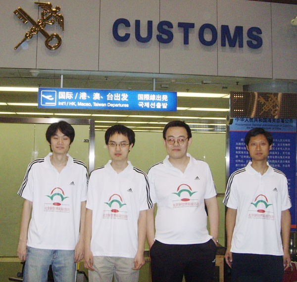
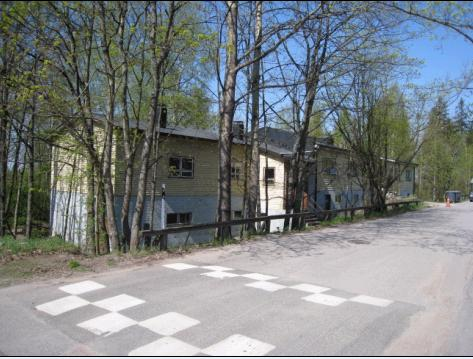
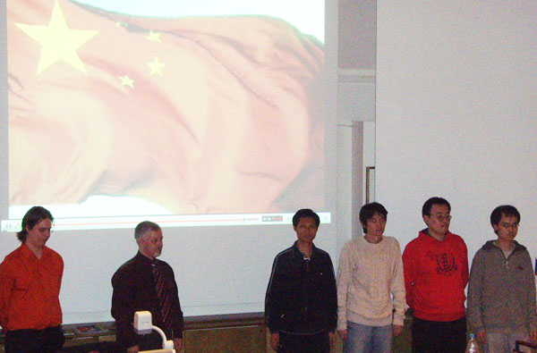

支持你
支持你【注：本文版权属于原作者和中国连珠网，爱五子棋网已经获得本篇文章的转载权，如需转载请直接和中国连珠网联系】

我是本届世界团体赛中国队的一员。在一个多月以前，我没有想到过能有机会参加这次比赛。大学毕业，工作和生活的压力渐渐袭来。自从四年前夺取全国冠军后，我都没有认真练习过五子棋。近一年来，我也没有参加任何五子棋比赛。
我本以为我将这样离开这项曾经赐予我快乐和辉煌的运动，连我自己也没有想到的是，朋友们的盛情邀请，以及我内心对五子棋难以忘却的依恋，我竟鬼使神差地在距比赛开幕仅仅一个月时决定参赛！
这一个月时间，我并未能全力准备比赛，很多事情让我分心，加之我又不幸生了场病。真正准备比赛的时间仅有赛前的半个星期。在这半周里，我发现自己的实战水平和棋谱量都低得难以置信，我的队友曹冬和吴镝分别是去年的全国冠军和世界冠军，而我甚至没有参加这些比赛。
这是我参加的所有比赛中，状态最低迷的一次，我难以对自己在这次比赛的表现抱有任何的希望。我认为，以这样的状态参赛，对朋友，对自己，都是不负责任的，我甚至有些后悔参赛了。
4月26日凌晨，全队四人登上了赴赫尔辛基的飞机。既然已经决定参赛，就没有退缩的余地，我决心在这有限的几天，发挥最大的能量，尽可能地夺取分数！
路上曾遇到一些小波折，总的来说还算顺利。当地时间26日傍晚，我们踏上了芬兰首都赫尔辛基的土地。
芬兰棋手KariHaikonen在机场迎接，驱车带我们来到住地。
赫尔辛基是个美丽的城市，蔚蓝的天空，浓密的树林，清澈的湖泊和碧绿的草坪令人神清气爽。我们住的地方是个二层小旅馆，被树林环绕，很有北欧童话的气息。虽然设施简陋，但是我很喜欢。

具有北欧童话气息的小旅馆
27日上午，Kari带我们参观了市区的一些名胜，这是赛前最后的放松。下午，开幕式在比赛地赫尔辛基商学院举行。出于公平的考虑，每队的台次安排由领队写在纸上，交给比赛组织者JussiIkonen，我被安排在第三台，由于近期我没有任何比赛成绩，所以我没有理由要求更高的台次。
这里有个小插曲，Jussi在拿到陈伟提交的台次安排后，兴奋地大声说，吴镝和他都是二台，他们要在比赛中对局！此时我们的主要对手俄罗斯和爱沙尼亚的台次安排还没有交，真是不幸，他们最终作了有针对性的安排。
开幕式后，我们看到俄罗斯一队的二台是EgorSerdyukov，我们并不熟悉这个名字，而他们的三台是KonstantinChingin，这个名字我们就很熟悉了，他是上届世界杯亚军，曾获欧洲冠军和俄罗斯冠军。
我们为此提出异议，但是没有结果。我必须要自己对付Chingin了:)
吴镝是队中研究最深的棋手，他自然地兼任了全队的教练。我在比赛中使用的很多策略都是依照他的建议，这在很大程度上弥补了我的不足。他开朗的性格给队中增添了很多笑声，帮助我减轻了压力，教会了我乐观的面对每一步棋。最终我的成绩还不算差，有很多是吴镝的功劳。

抽签仪式上
28日上午9点30分，比赛正式开始了。
坐在久违的棋盘前，品尝着这熟悉又陌生的味道，我体会着这既兴奋又有一点恐惧的感觉……
首轮的对手是瑞典队，对手名叫 Bjorn Lind，由我开局。这个名字我有一些熟悉，但是对他的成绩没有印象。我想，或许我可以不输。
我静静地观察了一会，两边的瑞典棋手都开出了瑞星局。记得我以前常开瑞星，当然现在已经有些陌生了。既然如此，不如避开对手熟悉的瑞星。
想到这里，我拿起棋子，走出了本次比赛的第一步，疏星！
我上一次开疏星是六年前的事了，前一晚和队友们简单看了看一个老定式，就直接拿出来用了。想不到在随后的几轮，这个定式居然在其它队中流行了起来，真是很有意思。
这局Lind执白，前21手是定式，随后他防得谨慎，我攻得也没有什么感觉，大概是因为久疏战阵的缘故吧。总是找不到有威胁的攻击点。
白30的明显错误给了我机会。经过20分钟的思考，我发现了黑31这个点，大概算了一下，没找到防点。白30挡在这个活二的另一边可能会好一点，当然我也并不确定，我还是有机会继续攻的。这一盘就这样糊里糊涂地赢了。
吴镝的对手在攻了半盘之后莫名其妙地超时了，他的时间并不紧张，令人不解。陈伟经过惊险
 ，我很感动．你的防守，我们放心．
，我很感动．你的防守，我们放心．下次再来嘛
支持我也学下棋等大点了和老师一样去外面下棋~~！！
| 【雅匪】 | 你们已是英雄！ | 2008-5-11 0:41:41 | 5分 |
转自中国网
事实我曾抗争，成败不必在我。
支持你